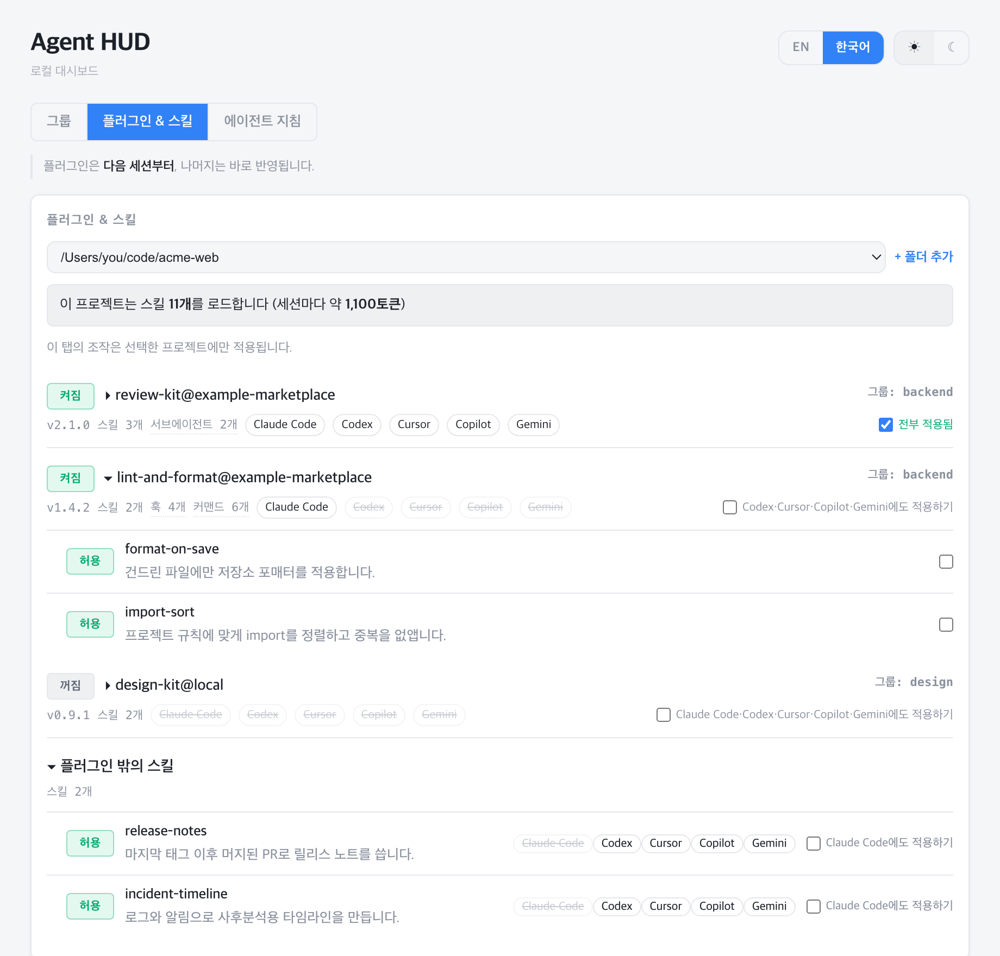
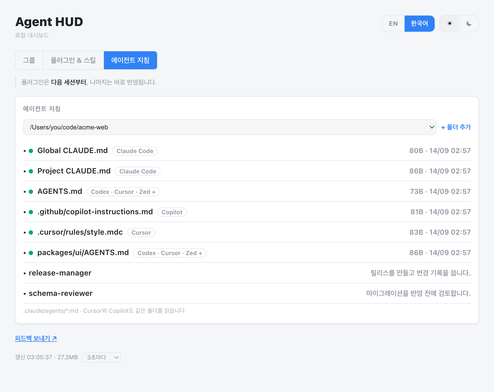

설치된 스킬과 플러그인을
한곳에서 볼 수 있습니다.
이 프로젝트에 필요 없는 건 OFF 합니다.
내 컴퓨터에서 돌아가는 대시보드입니다. 가입도 계정도 필요 없습니다.
지금은 macOS만 지원
브라우저에서 127.0.0.1:7717로 열리고, 백그라운드에서 계속 켜져 있습니다. Linux에서는 server.py를 직접 실행하면 되고, Windows는 아직 지원하지 않습니다(#1).

코딩 에이전트는 세션을 시작할 때
설치된 스킬의 이름과 설명을 전부 읽습니다.
쓰지 않는 스킬도 마찬가지입니다.
스킬 60개 · 18,938자 · 세션마다 5,000~9,000토큰
플러그인 3개가 깔린 컴퓨터 한 대에서 재본 예시 값입니다. Agent Skills 표준을 기준으로 스킬 하나에 약 100토큰씩 잡습니다. 스킬 개수와 설명 길이에 따라 값은 달라집니다. 내 프로젝트의 실제 값은 대시보드가 세어서 보여줍니다.
그래서 프로젝트마다 쓰지 않는 스킬과 플러그인을 꺼둘 수 있게 만들었습니다.
그룹은 함께 쓰는 플러그인과 스킬을 묶어둔 것입니다. 적용하면 이 프로젝트에는 그 묶음만 켜지고 나머지는 전부 꺼집니다. 고른 프로젝트만 바뀌고 다른 프로젝트는 그대로입니다. 플러그인은 다음 세션부터 반영됩니다.
{
"dev": {
"plugins": ["mattpocock-skills@mattpocock"],
"skills": ["diagnosing-bugs"]
},
"video": ["video-tools@local"]
}
그룹 탭에서 고쳐도 되고 modes.json을 직접 고쳐도 됩니다.
한 에이전트용으로 만든 스킬을 여섯 곳에서 그대로 쓸 수 있습니다.
스킬 형식은 공개 표준입니다. 에이전트마다 읽는 경로가 달라서, 대시보드가 스킬 하나를 두 폴더에 심볼릭 링크로 겁니다. 한 번 만들어 두면 다시 복사할 일이 없습니다.
흩어져 있는 지침 파일도 찾아줍니다.
CLAUDE.md, AGENTS.md, .cursor/rules/ 같은 지침 파일 30종을 찾아 크기와 수정 시각을 보여줍니다. 색인이고, 내용 대조는 사람이 합니다.

무엇을 하는지 직접 열어볼 수 있도록, 표준 라이브러리만 쓰는 파이썬 파일 한 개로 만들었고 이 컴퓨터 안에서만 돕니다. 이 컴퓨터의 설정 파일만 읽고 씁니다. 올라가는 데이터가 없고 만들 계정도 없습니다. 밖으로 나가는 요청은 12시간마다 하는 GitHub Releases 조회 하나뿐이고, 새 버전이 있는지만 알려줍니다. 쓰는 것은 플러그인 상태와 스킬 심볼릭 링크뿐이며, 지침 파일은 목록만 보여줍니다.